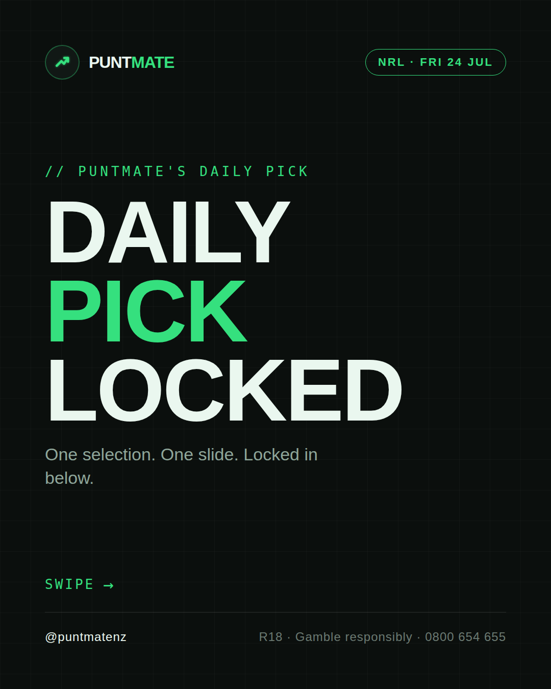
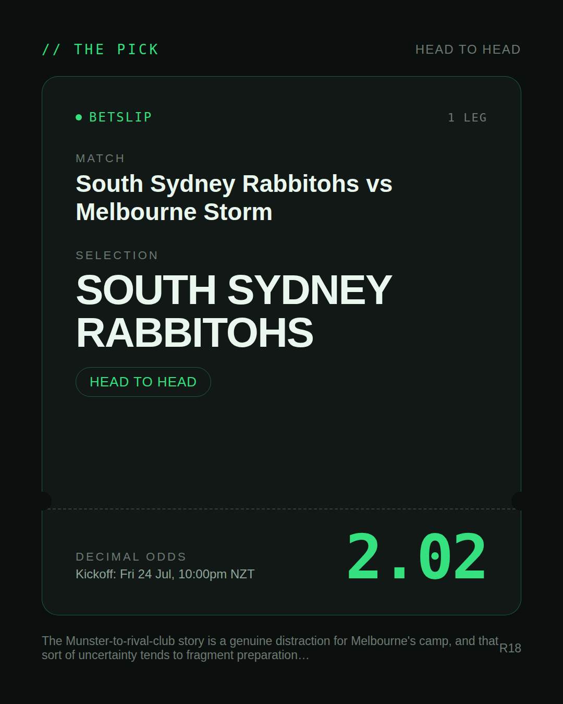
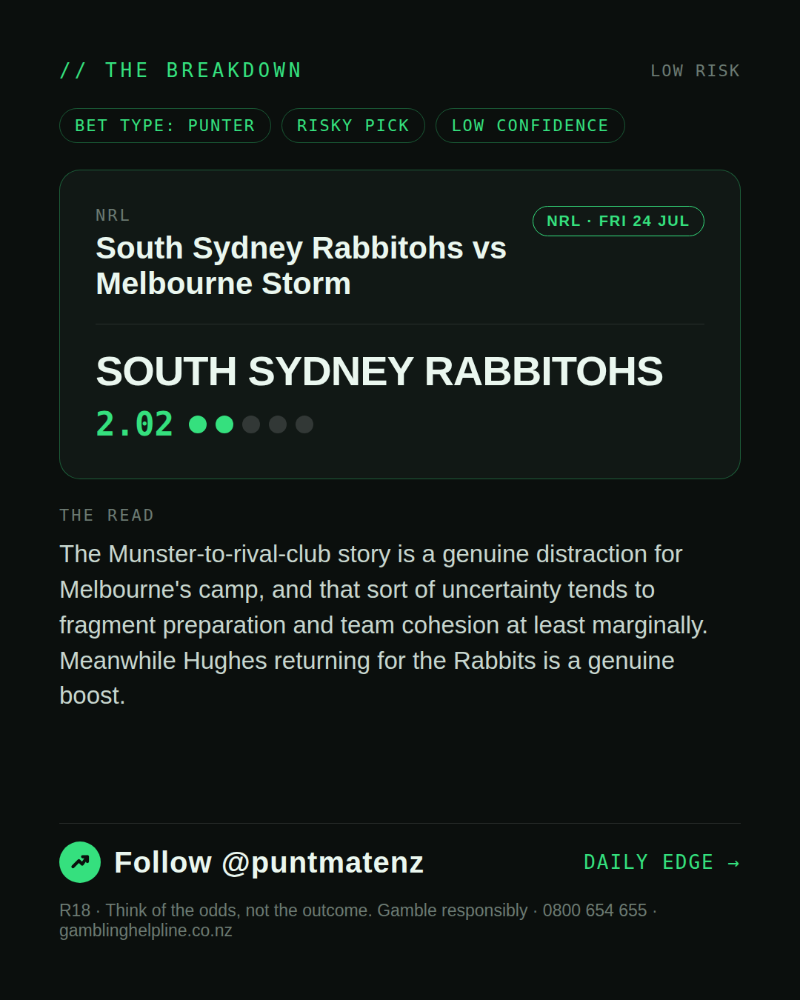
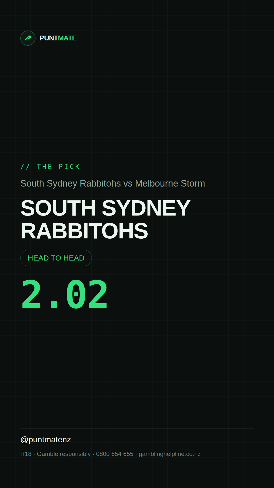

*🎯 PUNTMATE NZ — NRL* 🏟 South Sydney Rabbitohs vs Melbourne Storm *PICK:* SOUTH SYDNEY RABBITOHS *ODDS:* 2.02 (Head to Head) *BET TYPE: PUNTER* _The Munster-to-rival-club story is a genuine distraction for Melbourne's camp, and that sort of uncertainty tends to fragment preparation and team cohesion at least marginally. Meanwhile Hughes returning for the Rabbits is a genuine boost._ ────────────────── 📲 Join Telegram for daily picks R18 · Gamble responsibly · Problem Gambling Foundation NZ: 0800 664 262
🎯 NRL — South Sydney Rabbitohs vs Melbourne Storm SOUTH SYDNEY RABBITOHS @ 2.02 (Head to Head) BET TYPE: PUNTER Solid touch here. Not a lock, but the value's real and the form backs it up. The Munster-to-rival-club story is a genuine distraction for Melbourne's camp, and that sort of uncertainty tends to fragment preparation and team cohesion at least marginally. Meanwhile Hughes returning for the Rabbits is a genuine boost. Follow for daily value picks → @puntmatenz Problem Gambling Foundation NZ: 0800 664 262 #PuntmateNZ #SportsBetting #NZTAB #NRL
| has_pick | True |
| pick_id | 2026-07-23_South_Sydney_Rabbitohs_vs_Melbourne_Storm |
| run_id | 30045151078 |
| generated_at | 2026-07-23T21:12:47.455251+00:00 |
| post_date | 2026-07-23 |
| match | South Sydney Rabbitohs vs Melbourne Storm |
| sport | rugbyleague_nrl |
| sport_label | NRL |
| market | Head to Head |
| selection | SOUTH SYDNEY RABBITOHS |
| odds | 2.02 |
| bet_type | PUNTER_BET |
| bet_type_label | BET TYPE: PUNTER |
| bet_type_reason | Solid touch here. Not a lock, but the value's real and the form backs it up. The Munster-to-rival-club story is a genuine distraction for Melbourne's camp, and that sort of uncertainty tends to fragment preparation and team cohesion at least marginally. Meanwhile Hughes returning for the Rabbits is a genuine boost. |
| classification | RISKY_PICK |
| risk | RISKY_PICK |
| confidence | LOW |
| confidence_label | LOW |
| final_explanation | The Munster-to-rival-club story is a genuine distraction for Melbourne's camp, and that sort of uncertainty tends to fragment preparation and team cohesion at least marginally. Meanwhile Hughes returning for the Rabbits is a genuine boost. |
| public_caution | Keep this one light — the value's there but so is the uncertainty. |
| theme | night |
| carousel_paths | ['data/review/2026-07-23_South_Sydney_Rabbitohs_vs_Melbourne_Storm/cover.png', 'data/review/2026-07-23_South_Sydney_Rabbitohs_vs_Melbourne_Storm/tip.png', 'data/review/2026-07-23_South_Sydney_Rabbitohs_vs_Melbourne_Storm/breakdown.png'] |
| carousel_urls | ['https://raw.githubusercontent.com/kingofthecastle24/puntmate/main/data/cards/2026-07-23_South_Sydney_Rabbitohs_vs_Melbourne_Storm_night_1_cover.png', 'https://raw.githubusercontent.com/kingofthecastle24/puntmate/main/data/cards/2026-07-23_South_Sydney_Rabbitohs_vs_Melbourne_Storm_night_2_tip.png', 'https://raw.githubusercontent.com/kingofthecastle24/puntmate/main/data/cards/2026-07-23_South_Sydney_Rabbitohs_vs_Melbourne_Storm_night_3_breakdown.png'] |
| story_path | data/review/2026-07-23_South_Sydney_Rabbitohs_vs_Melbourne_Storm/story.png |
| story_url | https://raw.githubusercontent.com/kingofthecastle24/puntmate/main/data/cards/2026-07-23_South_Sydney_Rabbitohs_vs_Melbourne_Storm_night_story.png |
| intended_platforms | ['telegram', 'instagram_feed', 'instagram_story', 'facebook'] |
| workflow_state | GENERATED |
| has_punter_multi | False |
| has_gambler_multi | False |
| has_degenerate_multi | False |